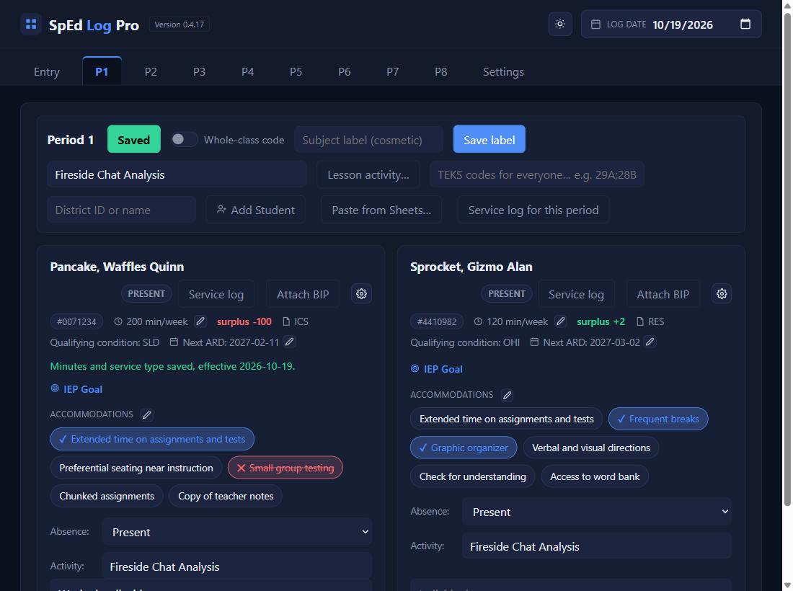
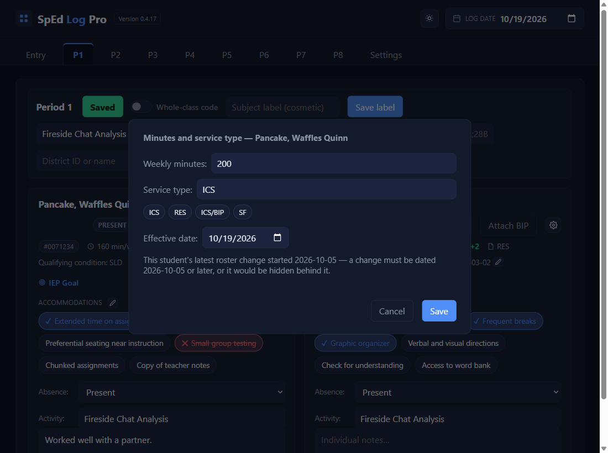
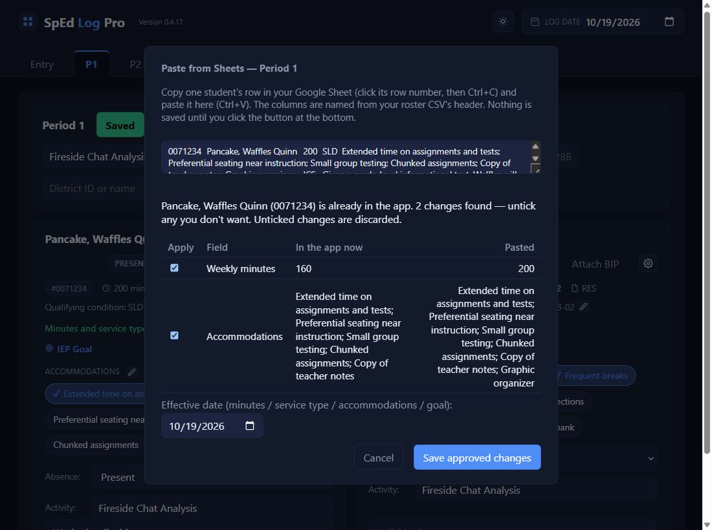
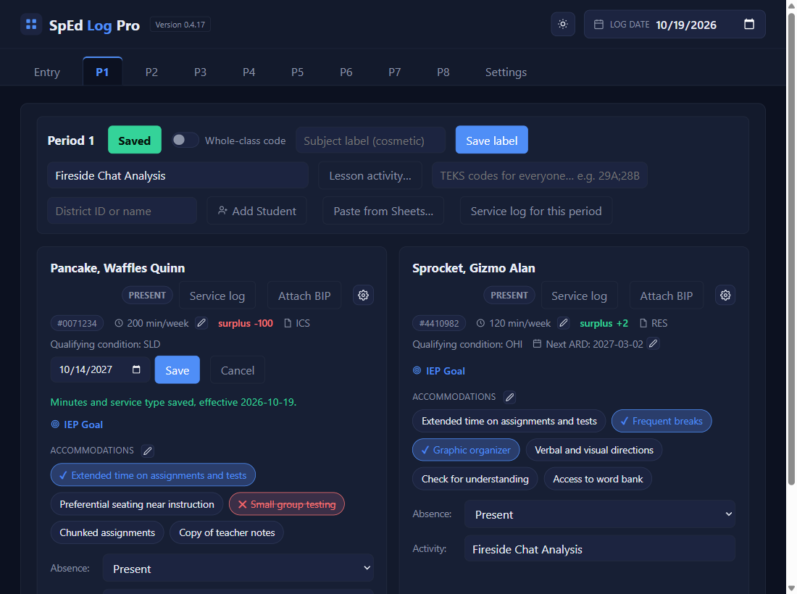

When the IEP changes
Enter an ARD change
⏱ About 4 minutes🔁 After each ARDYou need: the ARD date
Why: minutes, service type, accommodations, and the goal are dated: weeks before the ARD keep the old values, weeks from it on use the new ones, even weeks you've already logged. There are two ways in: the card's pencil, or pasting the student's updated row from your Sheet.
1
Minutes or service type: the pencil after min/week
On the card, click the small pencil next to the weekly minutes.

2
Change it, set the ARD date, Save
Type the new Weekly minutes, or click ICS, RES, ICS/BIP, or SF for the service type. Set Effective date to the ARD date, then Save.

3
A green line confirms it
The card shows the new minutes from that date on.
4
Several changes at once? Paste the row from your Sheet
Update the student's row in your Sheet first. Then on their period tab click Paste from Sheets…, copy the row in the Sheet (click its row number, Ctrl+C), and paste it in the box (Ctrl+V). The app lists each difference with a tick box. Untick anything you don't want, set the Effective date to the ARD date, and click Save approved changes.

5
The next ARD date: the pencil next to Next ARD
Click it, pick the new date (it must be after today), and Save.

✓ You'll know it worked
- A green line on the card, or
2 changes approved, 0 discarded. - The card shows the new values on and after the ARD date.
✕ Avoid these
- Dating it today instead of the ARD date. The minutes owed between the ARD and today would be wrong.
- Forgetting to re-paste. Weeks you already pasted into the real log before a backdated change: copy them again (Paste a week).
- A date before the student's latest change. Refused, with the earliest date you can use.
⚠ If you see this
There's already a roster change for this student starting …Use that date or later.
Not saved: the Next ARD date must be after today …Pick the date of the next annual ARD meeting.
Nothing changed, so nothing was saved.The values you typed are what the app already has.